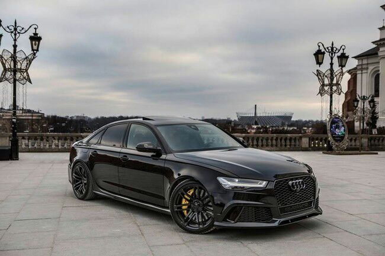

Coches Alemanes
Siendo el hogar del auto moderno, la industria automotriz alemana es reconocida por ser la más competitiva e innovadora del mundo, y tener la tercera mayor producción de autos en el mundo. Con una producción anual de cerca de seis millones de unidades y un 35.6% de la utilidad del mercado de la Unión Europea (2008), Alemania es el líder automotriz en Europa desde los años sesenta.
Marcas Alemanas:
- Mercedes-Benz
- Audi
- BMW
- Volkswagen
- Porche
A continuación nombraremos algunos de los mejores coches Alemanes:
Mercedes C63Amg
El W204 C 63 AMG está equipado con un motor V8 de 6.2 litros, que ofrece 457 hp (336 kW). El par máximo es de 600 Nm (a 5.000 revoluciones por minuto). El auto viene de serie con el AMG Speedshift 7G-TRONIC y tiene un modo deportivo ('S'), un modo confort ('C') y una función manual ('M'). Por lo tanto, la conmutación es posible tanto con la palanca de cambios como con las palancas de cambio en el volante. El sprint de 0-100 km / h va en 4.5 segundos para el Sedan y 4.6 segundos para el Estate. La velocidad máxima está limitada a 250 km / h, pero puede llegar a 280 km / h cuando compra el paquete Performance. Sin un limitador, el C 63 podría alcanzar los 315 km / h.
BMW M3
El BMW M3 es la versión deportiva del BMW Serie 3, producido por el fabricante de automóviles bávaro BMW. El primer M3 fue basado en el serie E30 que se comercializó en el año 1986, y desde entonces cada Serie 3 tuvo su versión M. A finales del 2007 se lanzó el M3 E92, con una potencia estimada en 420 CV. Desde el E30 BMW ha ido aumentando caballos y cilindros desde los cuatro en línea hasta el E92 que es un V8. BMW M GmbH anunció en el año 2013 el fin de la producción del M3 Coupé y afirmó que su sucesor será el BMW M4. Actualmente el M3 se vende como sedan y el M4 como coupe, al igual que las series 3 y 4
Audi Rs6
El Audi RS 6 quattro, comúnmente denominado RS6, es la versión de mayor potencia del Audi A6, por encima del Audi S6. Es un automóvil ejecutivo de tamaño mediano tipo deportivo producido por la subsidiaria de la compañía quattro GmbH para Audi AG, parte de Volkswagen Group. Las dos versiones del RS6 son un "Avant" de cinco puertas y cinco asientos, que es la denominación de Audi para los sedán y la versión familiar con estas características. Las iniciales "RS" corresponden a la palabra en alemán: RennSport, literalmente traducido como "sport de carrera", y es la gama de Audi de altísima performance
